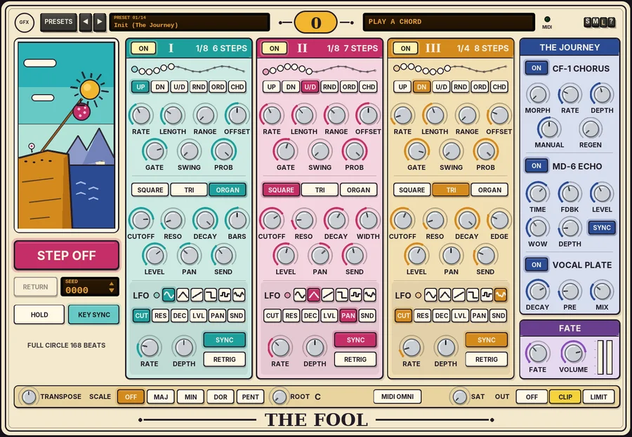

G Fool
Card 0 of the GFX Tarot series: a three-path arpeggiator synth whose interlocking organ patterns drift in and out of phase.

Overview
G Fool is THE FOOL, card 0 of the GFX Tarot series: the beginning of the journey. It is a self-contained synth with three arpeggiators - three paths - all fed by the same held chord. Each path has its own pattern length, so paths of different lengths slide in and out of phase against each other, and the whole figure only comes back round after the lowest common multiple of their lengths. That is the sound of the 60s and 70s minimalists: a few simple, interlocking pulsing organ patterns that keep shifting and lining up again.
Every path has its own voice, from the world of the combo and electric organs those players used: SQUARE (a combo-organ pulse), TRI (a transistor triangle) or ORGAN (four drawbars with a touch of key click and percussion), through its own low-pass filter, with its own LFO. STEP OFF deals a fresh, repeatable pattern from a seed. THE JOURNEY adds a chorus / flanger, a tempo-synced echo and a vocal plate, and FATE lets the cards reshuffle a little as it plays.
The paths lock to the project tempo when REAPER plays, and run free from the first key when it is stopped. Every note carries its own length, so a chord change or a transport stop never leaves a note hanging.
Reach for it for
- Phasing, interlocking organ patterns from a single held chord
- Evolving arpeggios that take minutes to repeat
- Pulsing chord beds and echoing canons
- Generative sketches: STEP OFF, listen, RETURN if the last one was better
- Ambient washes with long echoes and plate
Loading and playing it
- Insert G Fool on a new track. It is an instrument: it makes its own sound and needs no audio input.
- Arm the track for recording and set its input to your MIDI keyboard, or put a MIDI item on the track.
- Hold a chord. The three paths start to play it at once, each in its own pattern; the display at the top shows the held notes, and the MIDI light flashes when a note arrives.
- Switch HOLD on to latch the chord, so it keeps playing after you let go. Play a new chord to replace it.
- Press play in REAPER and the paths lock to the project tempo and position. Stopped, they run free at the project tempo from the first key you play.
- If you play on a particular MIDI channel, click MIDI OMNI on the bottom strip and choose it.
Controls
The header
- PRESETS
- Opens the full preset list.
- ◄ / ►
- Step to the previous or next preset (wrapping round).
- Preset display
- Shows the preset number and name. Click it for the preset list too.
- 0
- The card's numeral.
- Chord display
- The held chord, up to six notes (with + when there are more). It reads PLAY A CHORD when nothing is held, and starts with HOLD when HOLD is on.
- MIDI
- Flashes when a note arrives.
- S / M / L
- Panel size: small, medium or large. The panel also scales to fit the plugin window.
- ?
- Opens a pop-up with the design credit, the GFX website address and the address of this manual. Click anywhere to close it.
The card column
Under the card picture sit the controls that act on all three paths at once.
- STEP OFF
- Throws all three paths into a fresh pattern: each path's MODE, LENGTH, OFFSET and PROB are dealt again, within musical limits, from a new random SEED. The three paths always get different lengths (3 - 13 or 16 steps), and PROB is dealt between 60 and 100%, leaning towards the top. The same seed always deals the same hand.
- RETURN
- Swaps back to the pattern before the last STEP OFF. Press it again to step off to that pattern once more. It is greyed out until you have stepped off.
- SEED
- The seed of the current deal, 0000 - 9999. Turn the mouse wheel over it, or drag up or down on it, to deal seed by seed.
- HOLD
- Latch: the chord keeps playing after you let go, until you play a new one. Off by default.
- KEY SYNC / FREE
- KEY SYNC (the default) restarts every path's pattern on each new chord, on the next step of the grid. FREE keeps the patterns locked to the song position, so a new chord drops into the pattern wherever it is.
- FULL CIRCLE
- Shows after how many beats the paths that are on line up again - how long the whole figure is before it repeats.
PATH I, II and III
The three paths have the same controls. The heading shows the path's rate and length, and under it a winding line of stones shows the pattern, one per step, with the current one lit.
- ON
- Switches the path on or off. All three are on by default.
- UP / DN / U/D / RND / ORD / CHD
- The MODE: up, down, up and down, random, in the order you played the notes, or the whole chord on every step. RND is a fixed shuffled order (no note twice in a row) that repeats every LENGTH steps, so it still loops. CHD climbs through the octaves of RANGE step by step. The defaults are UP, U/D and DN for paths I, II and III.
- RATE
- The step length, locked to the tempo: 1/2, 1/4, 1/4., 1/4T, 1/8, 1/8., 1/8T, 1/16, 1/16., 1/16T or 1/32. Defaults 1/8, 1/8 and 1/4.
- LENGTH
- The pattern length, 2 - 16 steps (6, 7 and 8 by default). Different lengths are what make the paths phase against each other.
- RANGE
- How many octaves the pattern climbs through, 1 - 4 (1, 2 and 1 by default).
- OFFSET
- Moves the whole path up or down, -2 to +2 octaves (0, 0 and -1 by default).
- GATE
- Note length as a share of the step, 10 - 100% (80, 60 and 90% by default).
- SWING
- Delays every second step, 0 - 75% (0% by default).
- PROB
- The chance that each step plays, 0 - 100% (100% by default). Lower values leave gaps.
- SQUARE / TRI / ORGAN
- The path's voice. SQUARE: a combo-organ pulse. TRI: a transistor triangle. ORGAN: drawbars 8', 4', 2 2/3' and 2', with a whisper of leakage, a short key click and a little percussion. Path I is ORGAN, II SQUARE and III TRI by default.
- CUTOFF
- A 12 dB low-pass filter with key tracking, 80 Hz - 16 kHz (6 kHz, 3.5 kHz and 1.8 kHz by default).
- RESO
- Filter resonance, 0 - 100%.
- DECAY
- 20 ms to 5 s, from plucky to long. Fully up it reads HOLD: the note sustains for its whole gate, like an organ. HOLD, 600 ms and HOLD by default.
- WIDTH / EDGE / BARS
- The tone of the voice; its name follows the wave. WIDTH (SQUARE) narrows the pulse, thin and reedy. EDGE (TRI) folds in a buzzy edge. BARS (ORGAN) pulls out the upper drawbars: the 8' is always out, then the 4', the 2 2/3' and the 2' come in as you turn it up.
- LEVEL
- The path's level, 0 - 100%.
- PAN
- Its position, L100 to R100 (L35, R35 and centre by default).
- SEND
- How much of the path goes to the MD-6 echo and the plate, 0 - 100% (35, 45 and 25% by default).
LFO (one per path)
- Light
- Glows with the LFO's movement when it has some DEPTH.
- Shape keys
- Sine, triangle, saw, square, sample-and-hold or smooth random, drawn on the keys. Steps are slightly smoothed, so they never click.
- CUT / RES / DEC / LVL / PAN / SND
- The destination: cutoff (up to plus or minus three octaves), resonance, decay (read by each note as it starts), level (dips from the set level, never above it), pan or send.
- RATE
- With SYNC on: 4 bars, 2 bars, 1 bar, 3/4, 1/2, 1/4, 1/4T, 1/8, 1/8T or 1/16, locked to the project's beat. With SYNC off: 0.02 - 20 Hz.
- DEPTH
- -100 to +100%; negative values turn the shape upside down. 0% by default, so the LFOs are silent until you turn them up.
- SYNC
- Tempo-synced or free rate (synced by default).
- RETRIG
- Starts the LFO again from the top on every new chord.
THE JOURNEY
Three effects, each with an ON key. The CF-1 is an insert on the dry paths; the echo and the plate are fed by the paths' SENDs, and the plate also takes the echoes.
- CF-1 CHORUS
- The chorus / flanger pedal from the GFX Ten Rack: the organ's shimmer. MORPH goes from CHORUS to FLANGER; RATE 0.1 - 10 Hz; DEPTH; MANUAL sets the delay (3 - 12 ms as a chorus, 0.4 - 4 ms as a flanger); REGEN adds feedback for a more resonant flange. On by default.
- MD-6 ECHO
- The Ten Rack's modulated delay, with tempo sync: the tape-echo canon. TIME: with SYNC on, 1/16, 1/8T, 1/8, 1/8., 1/4T, 1/4, 1/4. (the default), 1/2, 1/2. or 1 BAR; with SYNC off, 20 ms - 2 s. FDBK (45%), LEVEL (40%), WOW (the wobble's rate) and DEPTH (how far it wobbles, centred on the set time so a synced echo stays on the beat). Changing TIME bends the echoes like tape. On by default.
- VOCAL PLATE
- The west plate of the GFX Platte 140 with its Vocal Plate settings. DECAY 0.4 - 5 s (2.6 s), PRE delay 0 - 250 ms (40 ms) and MIX (30%). On by default.
FATE and VOLUME
- FATE
- The series' drift, 0 - 100% (35% by default): the cards reshuffle a little. Each path's micro-timing, step chance, filter cutoff and pan wander slowly and on their own, the free LFO rates and the effects' clocks drift a touch, and the tuning wanders gently, so every note lands slightly differently in tune. At 0% everything stays exactly where you set it.
- VOLUME
- Output level, -24 to +6 dB.
- Meters
- Output level, left and right.
The bottom strip
- TRANSPOSE
- Moves everything up or down, -12 to +12 semitones.
- SCALE
- OFF, MAJ, MIN, DOR (dorian) or PENT (pentatonic). With a scale on, any note outside it moves down to the nearest scale note, so random patterns stay in key. OFF by default.
- ROOT
- The key of the scale, C to B.
- MIDI OMNI / MIDI CH
- The MIDI channel: click it and choose Omni (all channels, the default) or 1 - 16.
- SAT
- Band saturation on the way out: only the lows and highs are saturated (the mids stay clean), with a soft curve that loosens as the level rises. 0% by default.
- OUTPUT CLIP
- A soft clipper on the output (always on) catches overs at the ceiling.
Knobs: drag up or down (Shift for fine moves), use the mouse wheel, and double-click to reset a knob to its default. While you hover over or turn a knob, its label shows the value.
MIDI
G Fool plays from MIDI notes, with velocity, on the chosen channel. CC 120 and CC 123 (all notes off) clear the held chord. The notes themselves are never sent on.
Presets
A preset starts from Init and changes a few things. The MIDI channel, SAT and the OUT stage are left as they are.
- Init (The Journey)
- Three paths of 6, 7 and 8 steps: an ORGAN going up, a SQUARE going up and down over two octaves and a TRI going down an octave lower, with chorus, a dotted echo and the plate.
- Phase Walk
- Two organ paths at 1/16, 12 and 13 steps, panned apart: the classic slow phase shift.
- Organ Canon
- An eight-step organ figure over two octaves against a slow three-step line below, with long, loud echoes.
- Additive
- Paths of 4, 5 and 6 steps at 1/8, the third a SQUARE: a figure that keeps growing and regrouping.
- Pulse Field
- All three paths in CHD mode with short gates and decays, at 7, 8 and 9 steps: pulsing chords that shift against each other.
- Mirror Steps
- One path climbs while another falls, both at 1/16, over two octaves, with a third rocking up and down.
- Desert Organ
- Swung paths in dorian, darker filters, with slow synced LFOs moving the cutoff.
- Three Paths
- Organ, triangle and square at 1/16 with lengths of 7, 8 and 9.
- Wanderer's Reeds
- Two thin, reedy SQUARE paths whose LFOs sweep them across the stereo field.
- Cliff Edge
- Resonant, darker filters in a minor scale, more echo feedback and more FATE.
- Open Road
- Slow, sustained paths at 1/4 and 1/2 with long gates, a long plate and a gentle level swell on path III.
- Little Dog
- Random modes at 1/16 with some steps skipped, short squares and a sample-and-hold LFO on the decay: playful and skittish.
- Free Fall
- Random patterns of 11, 13 and 7 steps at different rates, spread wide in pitch, with plenty of FATE and stepped LFOs on the resonance: tumbling.
- Endless Beginning
- Slow sustained paths of 3, 5 and 7 steps into a long 1/2 echo and a five-second plate: an ambient wash that hardly ever repeats.
- Reset all to defaults
- Loads Init.
Tips
- For the classic phasing effect, give two paths the same RATE and voice and lengths one step apart (12 and 13, say), and pan them apart.
- Watch FULL CIRCLE: lengths with no common factor (7, 8 and 9) make figures that run for a long time before repeating.
- Hold a simple chord - two or three notes - and let the patterns do the work. Use HOLD so you can reach for the knobs.
- STEP OFF freely: RETURN always takes you back to the last pattern, and a seed you like can be noted and dialled in again with the wheel.
- Turn a SCALE on before using RND and the random patterns will stay in key.
- Set DECAY to HOLD and GATE near 100% for a sustained organ; shorten both for a plucky, pulsing figure.
- Set FATE to 0 for a strict, machine-like figure; turn it up for a looser, more human one.
File: gfx-g-fool.jsfx